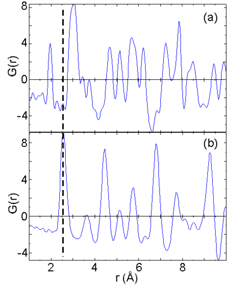

The in-situ reduction of CuO was followed using high energy X-rays coupled with a two dimensional image plate (IP) detector. The results are shown in Fig. 5.8. The reduction of CuO to Cu metal takes place at approximately 280oC C. The reduction to Cu is quite fast and occurs on the order of minutes. During this period both CuO and Cu are evident, and we are currently investigating the structural changes that occur.
High energy X-rays provide several experimental advantages in the structural analysis of time resolved data. Utilization of high-energy X-rays allow for larger values of momentum transfer to be probed (> 18 Å-1), opening up the possibility for the application of real space methods (pair distribution function, PDF, analysis) to probe changes to local structure during reaction conditions. The G(r)s obtained from the diffraction patterns (IP data) at the beginning of the in-situ experiment and at the end of the in-situ experiment are shown in Fig. 5.9. For example, the first Cu-O peak drops dramatically and a new peak at 2.6 Å (Cu-Cu) is observed. Traditional Bragg refinement of the same diffraction data used for PDF analysis provides for an improved parameter to data ratio. Exceptional Bragg profile refinements of beginning and final phases can be obtained, but disorder in mixed phase results in poorer fits and significant features in the difference electron density maps, which we are attempting to interpret. Following the reduction using real space methods may open up the further understanding of the reduction process, as the changes to the Cu-O coordination during the final stages of reduction may not be evident in the Bragg profile refinements.
|
 |